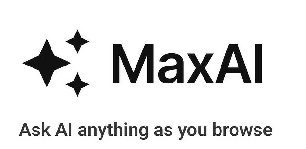
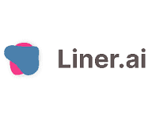
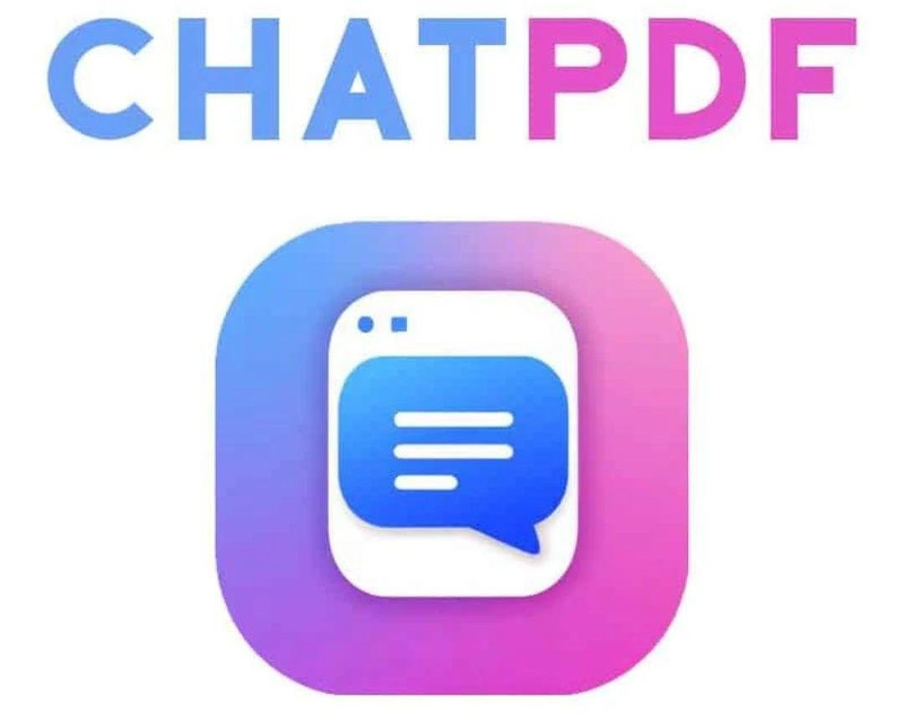
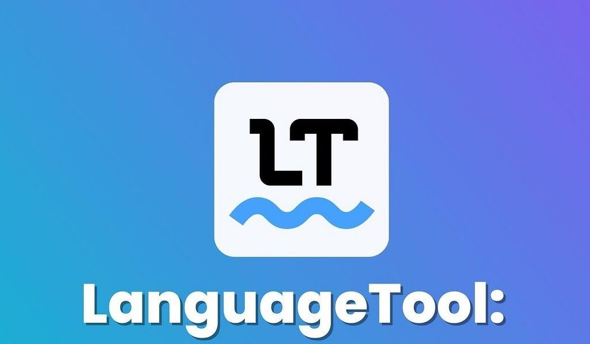

Esta categoria reúne ferramentas de Inteligência Artificial que podem apoiar processos de avaliação e reflexão sobre a aprendizagem. Esses recursos auxiliam na análise de textos, revisão de produções e organização de informações, contribuindo para oferecer feedback mais claro aos estudantes e apoiar o acompanhamento do processo educativo.

Apoie revisões textuais, reformulações e aprimoramento da escrita dos estudantes.

Organize leituras, destaques e sínteses para acompanhar produções e estudos.

Auxilie na leitura crítica e na identificação de informações relevantes em materiais de apoio.

Interaja com documentos para analisar textos, responder perguntas e apoiar devolutivas.

Revise ortografia, gramática e clareza textual em produções acadêmicas e escolares.